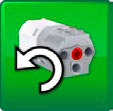

WeDo 2.0 编程（Programming）
编程是 21 世纪的一项重要技能
它赋予模型生命，教会学生计算机思维
一. 什么是 WeDo 2.0 编程

1. 【什么是编程？】编程即编写程序。
2. 【什么是程序？】程序即命令，能够让计算机一步一步去工作，完成某种特定的任务。
3. 【什么是计算机？】在 WeDo 2.0 中，智能集线器就是一个小计算机，能够按照程序一步一步工作。
4. 【什么是 WeDo 2.0 编程？】即编写程序，让智能集线器（SmartHub）按照你的意图一步一步去工作，帮助你完成某种特定任务。
二. WeDo 2.0 编程环境

1. 【准备一台编程电脑】笔记本、平板都可以。
2. 【在编程电脑上下载并安装编程软件】程序就是在编程软件中编写的。编程软件可到应用商店或乐高官网下载。
3. 【连接编程电脑和智能集线器】按下智能集线器上的绿色按钮，在编程软件中，按下智能集线器的名称，通过蓝牙无线与之连接。连接成功即可开始编程。
三. 程序组成
1. 【程序组成】多个程序块连接在一起组成程序链，一个或多个程序链组成程序。
2. 【程序链】多个程序块连接在一起组成程序链，程序链上的程序块从左到右按次序执行，程序链的最后一个程序块标志着程序结束。
3. 【程序块】具有特定功能的一块程序。
四. 程序类型

1. 【串行程序】由单条程序链组成，同一时刻只有一个程序块在运行。
2. 【并行程序】由多条程序链组成，并通过相同的启动块来同时运行多条程序链。同一时刻有多个程序块在运行。希望同时执行多个程序块时，需要使用并行程序。
五. 程序基本元素

1. 【程序输出】即程序让计算机（智能集线器或编程电脑）工作后的表现。如让编程电脑发出声音、显示图片，让智能集线器发光，让电动机转动等。
2. 【程序输入】即把相关信息输入给计算机，计算机使用输入信息作为工作依据。如传感器把检测到的信息，输入给计算机，计算机可对输入的信息作出响应。
3. 【程序等待】可以让程序等待一定时间，或等待传感器输入信息后再继续执行。
4. 【程序循环】可以让程序块重复执行，无限重复或在特定时间内重复。
5. 【程序功能】即一组程序块完成一组操作，如闪烁功能即由一组可以使光线闪烁的程序块组成。
6. 【程序条件】可以让程序块仅在特定情况下才执行。如仅当倾斜传感器检测到倾斜时，才转动电机，如果检测不到倾斜，转动电机程序块将永远不会执行。
六. 伪代码
1. 【程序代码】即编写的程序，是让计算机理解的，对人类不是很友好。
2. 【伪代码】即用我们人类语言去描述计算机程序，让人类更好的理解程序。
七. 程序块介绍

【程序块分类】流程程序块、电机程序块、光程序块、声程序块、显示程序块、传感器变化输入程序块、数字和文本输入程序块、记录程序块。
| 流程程序块 | |||||
|---|---|---|---|---|---|
| 1 | 【启动块】始终放在程序链的开头，以触发程序链运行。 | 2 | 【按键块】始终放在程序链的开头，以触发程序链运行。 | ||
| 【伪代码】鼠标点击启动块图标，启动程序。 | 【伪代码】键盘按键“A”，启动程序。 | ||||
| 3 | 【信息块】始终放在程序链的开头，以触发程序链运行。 | 4 | 【发送信息块】给“信息块”发送一条信息，触发程序链运行，信息格式可以是文本或数字。 | ||
| 【伪代码】接收到消息“abc”时，启动程序。 | 【伪代码】发送信息“abc”。 | ||||
| 5 |  |
【等待块】让程序暂停，在等待“设定时长”或“传感器输入特定信息”后再继续执行。 | 6 | 【重复块】重复块内的程序块将循环执行。循环可以无限重复、在一段时间内重复、在发生特定事件后停止。 | |
| 【伪代码】等待 1 秒。 | 【伪代码】重复执行特定步骤。 | ||||
| 电机程序块 | |||||
|---|---|---|---|---|---|
| 1 |  | 【电机左转块】设置电机逆时针方向转动轮轴，并启动电机。点击程序块图标可更改旋转方向。 | 2 | 【电机右转块】设置电机顺时针方向转动轮轴，并启动电机。点击程序块图标可更改旋转方向。 | |
| 【伪代码】使电机逆时针旋转。 | 【伪代码】使电机顺时针旋转。 | ||||
| 3 | 【电机功率块】设置电机的功率，并启动电机。功率范围 0 到 10。 | 4 | 【电机定时块】设置电机的运行时间，并启动电机。时间可用整数或小数。 | ||
| 【伪代码】以功率 8 启动电机。 | 【伪代码】让电机运行 1 秒。 | ||||
| 5 | 【电机停止块】让电机停止运行。 | ||||
| 【伪代码】停止电机。 | |||||
| 光程序块和声音程序块 | |||||
|---|---|---|---|---|---|
| 1 |  |
【闪灯块】让智能集线器上的 LED 灯闪一下。设置数字 0 到 10 可改变 LED 灯的颜色。 | 2 | 【音乐块】让 WeDo 2.0 编程软件播放声音。设置数字可改变声音，设置数字 0 可播放自定义录制声音。 | |
| 【伪代码】以颜色 9（红色）使 LED 灯闪一下。 | 【伪代码】播放声音 1。 | ||||
| 输出显示程序块 | |||||
|---|---|---|---|---|---|
| 1 | 【显示背景块】在 WeDo 2.0 编程软件中显示一个带有背景图的窗口，背景图可通过数字设置。 | 2 |  |
【显示内容块】在背景图窗口中，显示自定义内容。内容可以是文本、数字。 | |
| 【伪代码】显示图像 1。 | 【伪代码】显示内容 123。 | ||||
| 3 | 【加法显示块】“当前窗口显示内容”与“加法显示块的数字”执行加法运算，结果显示在窗口中。 | 4 | 【减法显示块】“当前窗口显示内容”与“减法显示块的数字”执行减法运算，结果显示在窗口中。 | ||
| 【伪代码】执行加法运算，并显示结果。 | 【伪代码】执行减法运算，并显示结果。 | ||||
| 5 | 【乘法显示块】“当前窗口显示内容”与“乘法显示块的数字”执行乘法运算，结果显示在窗口中。 | 6 | 【除法显示块】“当前窗口显示内容”与“除法显示块的数字”执行除法运算，结果显示在窗口中。 | ||
| 【伪代码】执行乘法运算，并显示结果。 | 【伪代码】执行除法运算，并显示结果。 | ||||
| 输出显示程序块 | |||||
|---|---|---|---|---|---|
| 7 | 【关闭显示块】关闭在 WeDo 2.0 编程软件中显示的窗口。 | 8 | 【全屏显示块】使 WeDo 2.0 编程软件中的显示窗口全屏显示。点击程序块图标可更改大小。 | ||
| 【伪代码】关闭显示窗口。 | 【伪代码】全屏显示窗口。 | ||||
| 9 | 【小屏显示块】使 WeDo 2.0 编程软件中的显示窗口小屏显示。点击程序块图标可更改大小。 | ||||
| 【伪代码】小屏显示窗口。 | |||||
| 传感器变化输入程序块 | |||||
|---|---|---|---|---|---|
| 1 | 【距离变化输入块】运动传感器检测到和物体之间的距离发生变化，并输入给程序块。 | 2 | 【距离变近输入块】运动传感器检测到和物体之间的距离变近，并输入给程序块。 | ||
| 【伪代码】距离变化输入。 | 【伪代码】距离变近输入。 | ||||
| 3 | 【距离变远输入块】运动传感器检测到和物体之间的距离变远，并输入给程序块。 | 4 | 【震动输入块】倾斜传感器检测到自身正在震动，并输入给程序块。 | ||
| 【伪代码】距离变远输入。 | 【伪代码】震动输入。 | ||||
| 5 | 【向下倾斜输入块】倾斜传感器检测到自身正在向下倾斜，并输入给程序块。 | 6 | 【向上倾斜输入块】倾斜传感器检测到自身正在向上倾斜，并输入给程序块。 | ||
| 【伪代码】向下倾斜输入。 | 【伪代码】向上倾斜输入。 | ||||
| 传感器变化输入程序块 | |||||
|---|---|---|---|---|---|
| 7 | 【向右倾斜输入块】倾斜传感器检测到自身正在向右倾斜，并输入给程序块。 | 8 | 【向左倾斜输入块】倾斜传感器检测到自身正在向左倾斜，并输入给程序块。 | ||
| 【伪代码】向右倾斜输入。 | 【伪代码】向左倾斜输入。 | ||||
| 9 | 【不倾斜输入块】倾斜传感器检测到自身不倾斜，处于水平位置，并输入给程序块。 | 10 | 【音量变化输入块】WeDo 2.0 编程设备上的麦克风检测到音量变化，并输入给程序块。 | ||
| 【伪代码】不倾斜（水平位置）输入。 | 【伪代码】音量变化输入。 | ||||
| 数字、文本输入程序块 | |||||
|---|---|---|---|---|---|
| 1 | 【倾斜传感器输入块】向程序块输入倾斜传感器检测到的数值（0 到 9）。 | 2 | 【运动传感器输入块】向程序块输入运动传感器检测到的数值（0 到 10）。 | ||
| 【伪代码】倾斜传感器数值输入。 | 【伪代码】运动传感器数值输入。 | ||||
| 3 | 【声音传感器输入块】向程序块输入声音传感器检测到的数值（0 到 10）。 | 4 | 【数字输入块】向程序块输入数值。 | ||
| 【伪代码】声音传感器数值输入。 | 【伪代码】数值输入。 | ||||
| 5 | 【文本输入块】向程序块输入文本。 | 6 | 【窗口内容输入块】向程序块输入窗口显示的数值。 | ||
| 【伪代码】文本输入。 | 【伪代码】窗口内容输入。 | ||||
| 数字、文本输入程序块 | |||||
|---|---|---|---|---|---|
| 7 | 【随机输入块】向程序块输入随机数值。数字范围由所附加的程序块确定。 | ||||
| 【伪代码】随机数字输入。 | |||||
| 记录程序块 | |||||
|---|---|---|---|---|---|
| 1 | 【注释框】使用注解框给程序添加注释。这不是程序块。 | ||||
| 【伪代码】给程序添加注释。 | |||||
八. 流程图（Flowchart）
1.【什么是流程图？】使用图形表示程序运行的流程（即算法）。
2.【为什么要使用流程图？】千言万语不如一张图，使用图形化方式更清晰的表达程序的运行；流程图是练习抽象化能力的有效工具，可以帮助学生规划和构建自己的解决方案；
3.【如何制作流程图？】可手绘流程图，也可使用电脑工具绘制。
4.【流程图的规范有哪些？】圆圈（或椭圆）表示流程的开始和结束；箭头表示流程运行方向；矩形表示输入输出；使用菱形表示条件判断；
九. 练习（Excercise）

十. 项目（Project）